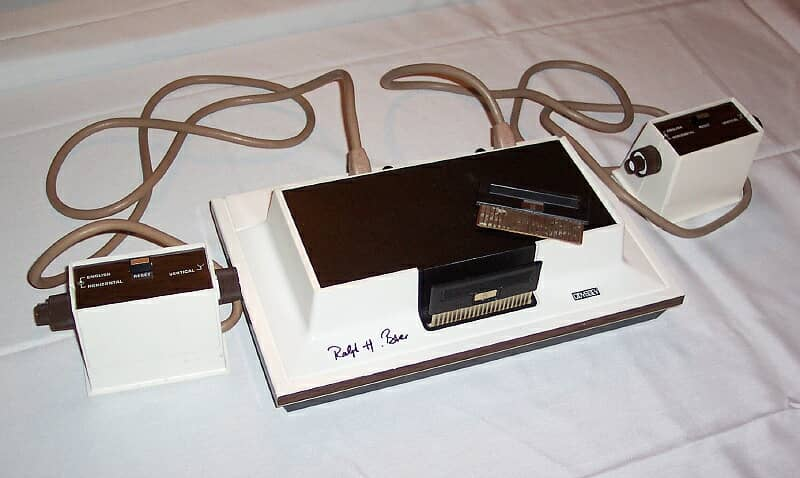
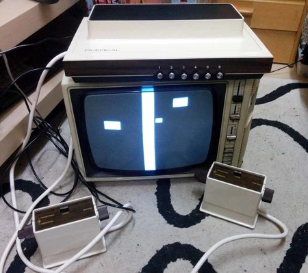
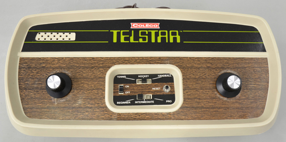
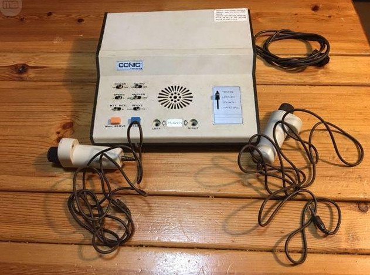
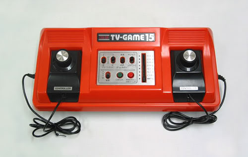
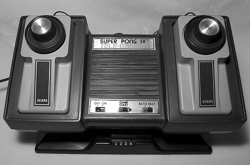

Magnavox Odyssey
- Fabricante: Magnavox
- Procesador: No posee.
- Formato: Cartucho de jumpers – en realidad son “interruptores”.
- Puertos: 2 mandos.
- Librería de juegos: 12
- Precio Original: 100$ - en 1972. A grosso modo, serían unos 550$ actualizados.
- Ventas: 330.000 unidades.
Overkal
- Fabricante: INTER ELECTRÓNICA
- Procesador: No posee.
- Formato: Interruptores, juegos integrados.
- Puertos: 2 mandos conectados permanentemente.
- Librería de juegos: 6 variantes para jugar a 8 juegos.
- Precio Original: 9.000 pesetas de 1973/74/75, que equivaldrían
a algo entre 500 y 600€. VENTA POR CORREO: 9.400 pesetas con un 10% de descuento, es
decir, 10.45 pesetas precio completo.
- Ventas: Desconocidas. Su rareza es extrema.


Coleco Telstar
- Fabricante: Coleco
- Procesador: No posee.
- Formato: Tres juegos integrados.
- Puertos: No tiene, sólo consta de dos potenciómetros para el movimiento.
- Librería de juegos: 3
- Precio Original: 50$ - en 1976.
- Ventas: 1 millón de unidades.
Conic TVG 201-4
- Fabricante: Conic
- Procesador: N/A.
- Formato: N/A.
- Puertos: 2 mandos.
- Librería de juegos: cuatro variaciones de Pong incluídas en la máquina.
- Precio Original: N/A.
- Ventas: N/A.


Color TV-Game 15
- Fabricante: Nintendo
- Procesador: N/A.
- Formato: Quince juegos integrados.
- Puertos: No tiene, sólo consta de dos potenciómetros para el movimiento.
- Librería de juegos: 15
- Precio Original: 15.000 yenes - en 1978.
- Ventas: 1 millón de unidades.
Sears-Atari Super Pong IV
- Fabricante: Sears - Atari
- Procesador: N/A.
- Formato: Cuatro juegos integrados.
- Puertos: No tiene, sólo consta de dos potenciómetros para el movimiento.
- Librería de juegos: 4.
- Precio Original: 79,95$ - en 1977.
- Ventas: N/A.
